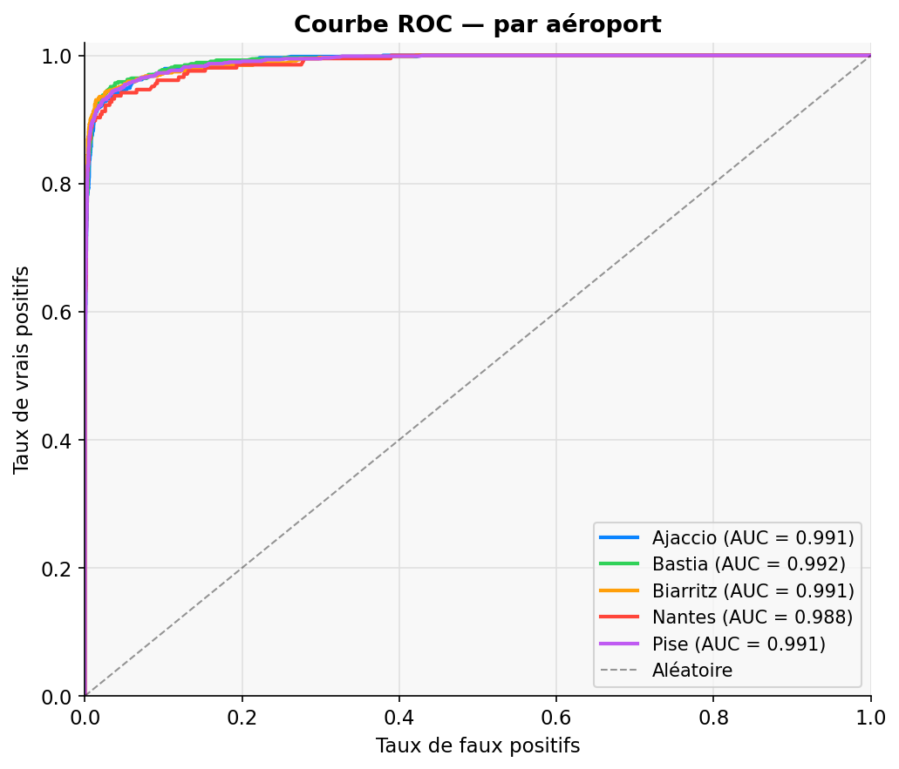
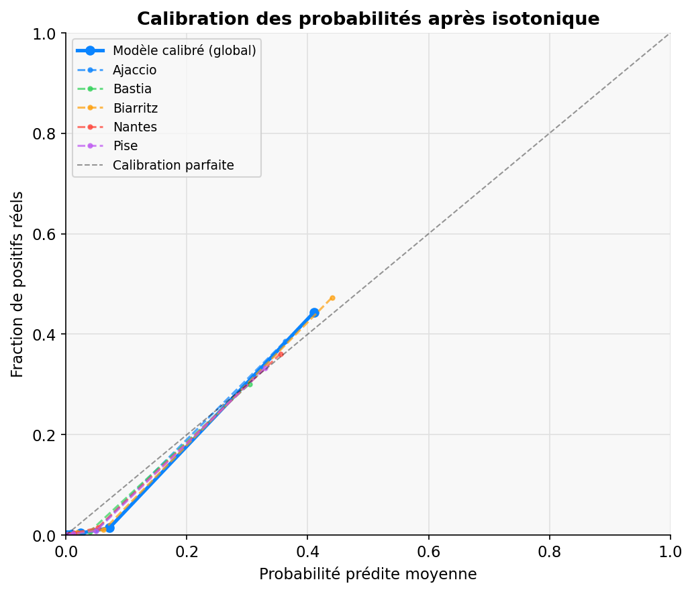
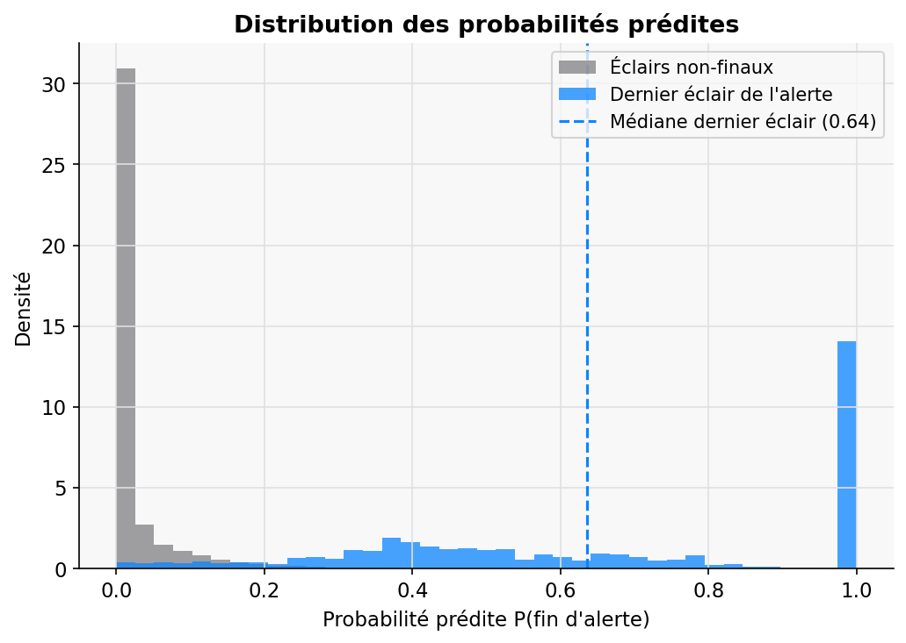
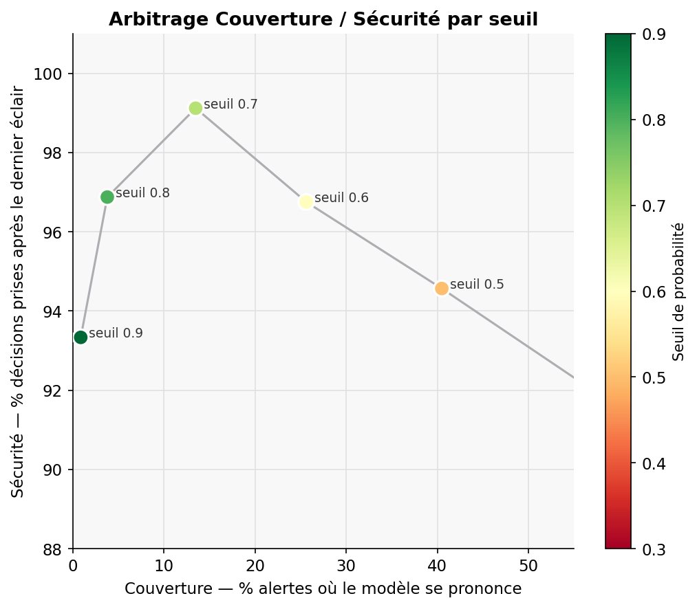

Un modèle XGBoost calibré qui remplace la règle fixe des 30 minutes par une probabilité calculée éclair par éclair — sur 5 aéroports européens.
Le problème
La règle actuelle impose un délai fixe après le dernier éclair détecté dans un rayon de 10 km. Elle ne tient compte ni de l'intensité de l'orage, ni de sa trajectoire, ni du temps déjà écoulé.
Dès qu'un éclair est détecté à moins de 10 km, tout s'arrête sur la piste. Le compteur repart à zéro à chaque nouveau coup, indépendamment de la distance ou de l'intensité.
Chaque minute d'immobilisation coûte environ 166 € par avion dans un aéroport (d'après AESA). Les délais se propagent en cascade dans tout le réseau aérien mondial.
Chaque minute d'immobilisation au sol a un coût environnemental direct : un seul A320 en attente émet près de 400 kg de CO₂ par heure en mode APU, sans avancer d'un mètre — soit l'équivalent de plusieurs trajets Paris-Lyon en voiture.
Produire une probabilité P(fin d'alerte) mise à jour à chaque éclair. Le seuil de déclenchement est un paramètre de risque ajustable par Meteorage — pas un hyperparamètre technique.
Approche technique
128 992 éclairs CG (Cloud-ground) sur 10 ans, 2 627 alertes, 5 aéroports. Les timestamps dupliqués (521 alertes concernées) sont résolus par un offset nanoseconde.
Des fenêtres glissantes temporelles (5-10-15-30 min) capturent la dynamique de l'orage en temps réel. Le comptage dédié des éclairs à moins de 3 km traite séparément la zone de danger opérationnel.
4 modèles sont comparés sur les mêmes données, et XGBoost domine sur tous les aéroports. Celui ci gère naturellement les déséquilibres de classes (2 627 positifs / 56 599 observations), supporte les valeurs manquantes, et demeure robuste aux features corrélées. La calibration est appliquée en post-processing.
XGBoost produit des scores discriminants mais pas nécessairement des probabilités calibrées. Sans
calibration, une valeur de 0.8 ne correspond pas à 80% de chances réelles — ce qui rend le modèle
inutilisable pour une décision opérationnelle. La calibration isotonique via CalibratedClassifierCV
corrige cette déviation sans contrainte paramétrique.
# La calibration comme étape dédiée du pipeline xgb_model = XGBClassifier(n_estimators=300, max_depth=6, ...) calibrated = CalibratedClassifierCV(xgb_model, method='isotonic', cv=3) calibrated.fit(X_train, y_train) # Brier Score : 0.042 → 0.018 après calibration
Split par groupe d'alerte complet (GroupShuffleSplit).
Aucun éclair d'une alerte de test n'apparaît en entraînement. La feature alert_progress
(= 1.0 exactement au dernier éclair) a été identifiée et supprimée — c'était une fuite directe.
Chaque décision a une raison technique précise.
iterrows() initiale prenait plusieurs
heures sur 128k éclairs. Le rolling pandas sur index datetime est entièrement vectorisé en C — le feature
engineering passe en moins de 2 minutes.Démonstration live
Choisis un aéroport et une alerte. Regarde le modèle recalculer P(fin d'alerte) éclair par éclair, en conditions opérationnelles réelles.
python predict.py puis place predictions.csv dans le même
dossier.Résultats
Évalués sur un test set d'alertes complètes jamais vues à l'entraînement (GroupShuffleSplit, 20%).




Responsabilité
Un bon modèle ne suffit pas. Il faut anticiper ses effets secondaires et les responsabilités qu'il crée.
Des alertes plus courtes pourraient faciliter plus de rotations et augmenter les émissions nettes. Ce lien est très indirect — les politiques de trafic restent le principal levier. Les économies immédiates viennent de la réduction des délais au sol, pas de vols supplémentaires.
Un faux négatif — prédire la fin trop tôt — expose directement les équipes au sol à un risque physique. Le seuil θ est une décision de responsabilité appartenant à Meteorage, pas un hyperparamètre technique.
Suite à la discussion avec Stéphane Schmidtz (Meteorage), le modèle intègre des features dédiées aux éclairs à moins de 3 km — nettement plus dangereux pour les équipes. Ces features reçoivent un traitement séparé dans le pipeline de features.
Les probabilités sont calibrées isotoniquement — 80% correspond à 80% de fins d'alerte réelles. Le Brier Score valide cette calibration. Le modèle produit des valeurs interprétables, pas un score opaque.